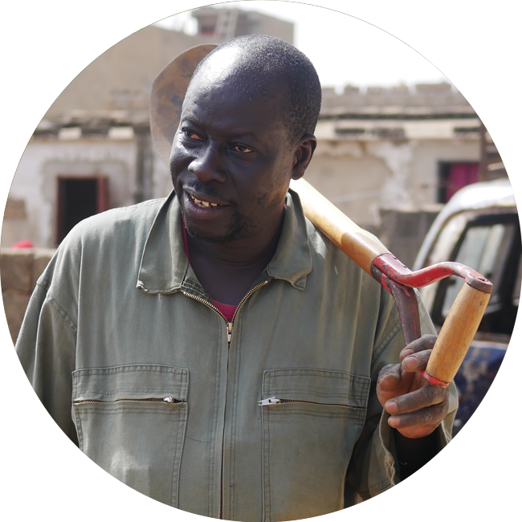
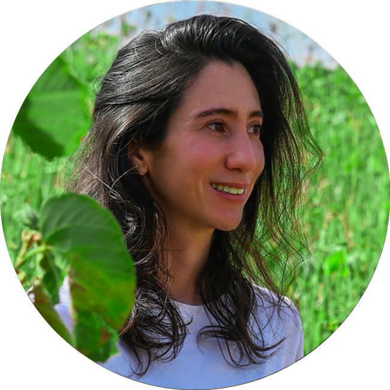

Qui sommes-nous ?
Né le 1er septembre 2018, DakarOxy est une initiative citoyenne créée avec le désir de réveiller les consciences sénégalaises et les inciter à reverdir nos villes enfumées afin de lutter contre les terribles effets de la pollution de l’air. Notre objectif ? Aider au reboisement du pays, dans les banlieues dakaroises comme dans les régions.
Freiner la crise écologique du réchauffement globale pour léguer aux générations à venir une terre plus propre est certes ambitieux, mais notre force réside dans le nombre. Si nous nous y mettons tous, ensemble, aucun défi ne saurait nous résister.
« Je fais ma part. »
-- DakarOxy.
L'Équipe
Composée de cinq membres discrets mais hautement motivés, l'équipe DakarOxy est une initiative avant tout sénégalaise qui se décline sous le signe de la diversité qui fait la richesse de notre pays. Animés d'une vive fibre patriotique, nous fonctionnons encore régulièrement sur fonds propres, en marge de nos activités professionnelles.

Anna Diop
Fondatrice

Mariama Diatta
Chargée des Relations

Jean-Pierre Gomis
Spécialiste Horticulture

Mouhamed Amir Ndiaye
Photographe - Vidéaste

Chérine Hoa
Responsable Multimédia
Missions
« Celui qui plante des arbres, sachant qu’il ne s’assiéra jamais à leur ombre,
a tout au moins commencé à comprendre le sens de la vie. »
-- Rabindranah Tagore.
PatriOxy
L'objectif premier de DakarOxy, depuis le début de sa création, est d'aider les Sénégalais à comprendre le rôle nécessaire à la vie que jouent les arbres et de les inciter à en planter autour d'eux. Notre pays compte seize millions d'habitants, et si, aujourd'hui, chacun faisait sa part, le Sénégal serait riche de plus de seize millions d'arbres pour nous aider à déjouer les conséquences des gaz à effet de serre, d'une extrême toxicité, qui menacent notre santé et celle de la Terre.
Campagnes de reboisement
Parmi les activités récurrentes de DakarOxy, nous effectuons des campagnes de reboisement dans les quartiers les plus appauvris en arbres, autant dans la banlieue dakaroise que dans les régions.
Celles-ci sont lancées suite à la demande et avec l’aide des populations locales après qu’un contrat d’engagement visant à protéger et arroser les arbres ait été établi entre DakarOxy et les bénéficiaires. Cette condition sine qua none à toute campagne permet d’optimiser les chances de survie des arbres, le temps qu’ils atteignent maturité et autonomie.
Découvrez un aperçu de notre travail sur le terrain sur les comptes Instagram et YouTube de nos réseaux sociaux.
ÉcolOxy
La sensibilisation des plus jeunes étant fondamentale à la préservation de leur environnement, DakarOxy s’est fixé pour mission d’intervenir au sein des écoles afin d’éveiller nos enfants aux problèmes liés à la pollution de l’air, dont l’alarmant réchauffement climatique. Adultes de demain, nos enfants doivent être des actifs dès aujourd'hui pour nous aider à résoudre un problème qui concerne autant nos générations que celles à venir.
Legacy
L'Afrique de l'Ouest connaît depuis la fin des années 70 des cycles de sécheresse qui n'ont pas épargné le Sénégal. Chaque jour, le désert gagne du terrain. Face à la dégradation des terres, nous avons décidé de sillonner le pays afin de capturer en images la faune et la flore, autant pour l'immortaliser que faire découvrir les magnifiques paysages sénégalais qui disparaissent peu à peu.
Campagnes
2018
★ EcolOxy / campagne de reboisement : Diamaguéne – Cours Sainte Marie de Hann
2019
★ EcolOxy / campagne de reboisement : Mbeubeuss – Cours Sainte Marie de Hann
★ EcolOxy / campagne de reboisement : Malika – Cours Sainte Marie de Hann
★ EcolOxy / campagne de reboisement : Rufisque – Cours Sainte Marie de Hann
★ campagne de reboisement : Thies – Groupe Kirène
campagne de reboisement : Diourbel
2020
campagne de reboisement : Fatick
★ campagne de reboisement : Keur Massar – JVE Sénégal
tournages de vidéos de sensibilisation
2021
campagne de reboisement : Mbeubeuss
DakarOxy's Legacy : Sine Saloum
DakarOxy's Legacy : Palmarin
DakarOxy's Legacy : Mboro
DakarOxy's Legacy : Kedougou
tournage d'un court métrage de sensibilisation
2022
★ campagne de reboisement : Poukham – SAR Sénégal
Les missions précédées d'une étoile (★) ont bénéficié de l'aide de contributeurs.
Un énorme MERCI ! à eux et aux donateurs plus discrets
qui nous ont généreusement envoyé des dons !
Contrat
Parce que nous sommes convaincus de la portée des initiatives citoyennes, nous ne nous contentons de planter des arbres : nous allons à la rencontre des populations bénéficiaires de nos campagnes suite à leur propre demande et procédons avec eux au reverdissement de leur commune. Un contrat moral et physique est établi afin de concrétiser l'engagement des deux partis.
Conditions
Les demandes de reboisement doivent répondre à quelques conditions préalables pour être étudiées par l'équipe :
- la nécessité d'être une association ou un regroupement de personnes s’engageant à assurer le suivi et l’entretien des arbres
- la formulation d'une demande pour une campagne de reboisement en nous envoyant un message via courriel ou notre page Facebook
- l'organisation d’une rencontre sur les lieux où doit se tenir la campagne de reboisement
L'engagement de DakarOxy
Si la demande est approuvée par l'équipe, DakarOxy s'engage alors à :
- offrir les arbres, le grillage, le fertilisant
- passer régulièrement, lors d'une visite organisée ou à l'improviste, jusqu’à ce que les arbres soient autonomes, afin d’évaluer leur bon développement
- couvrir médiatiquement la campagne et ses suivis
L'engagement des bénéficiaires
En contrepartie, les bénéficiaires des campagnes doivent s'engager à :
- établir une liste des bénéficiaires des arbres moyennant une contribution symbolique de 500 FCFA (0,76€) par personne inscrite
- creuser les trous destinés à recevoir les arbres au moins 24h avant la campagne
- veiller à l'arrosage quotidien des arbres et à leur protection
- contrôler régulièrement l'état de santé des arbres
- désigner une personne relais, chargée de rendre compte périodiquement à DakarOxy de l’évolution des arbres, photos à l’appui
- remplacer l’arbre en cas de disparition
Pépinière
Retrouvez notre pépinière, KeurOxy, aux Maristes !

Les arbres sont destinés à nos campagnes de reboisement ;
toutefois, parce que nous aimerions que la pépinière nous aide
à subventionner nos activités,
une partie des plants est mise à la vente pour les particuliers.
Si vous êtes intéressé, n'hésitez pas à contacter Awa au 77 227 65 82.
Les recettes générées serviront à financer les projets de DakarOxy.
Nous Contacter
Désireux d'aider au financement des campagnes de DakarOxy ?
Envoyez-nous un mail à dakaroxy@gmail.com !